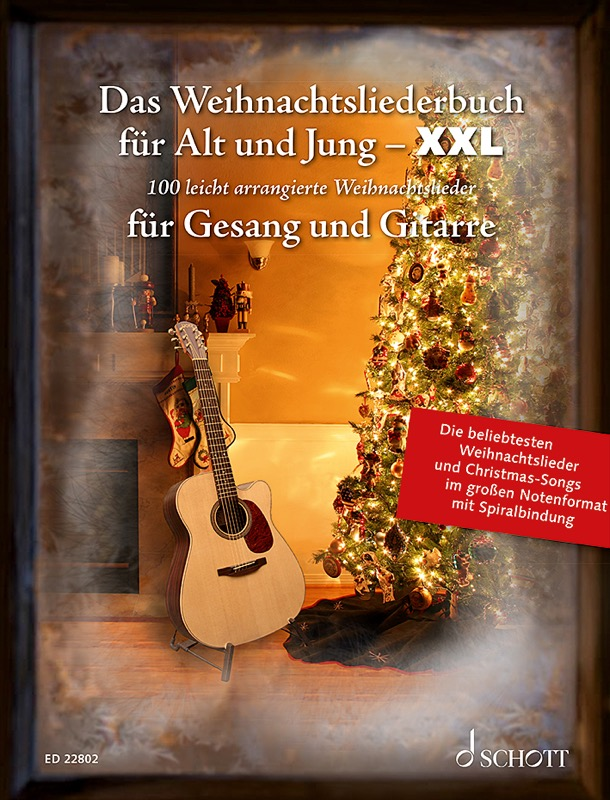

Bei Seniorinnen und Senioren kommen in der Adventszeit vor allem die Weihnachtslieder an, die sie seit Kindheit und Jugend kennen: Stille Nacht, O Tannenbaum, Kling, Glöckchen oder auch White Christmas. Dieser Beitrag stellt 18 solcher Lieder in vier Gruppen vor und zeigt, worauf du bei Auswahl, Tempo und Liedtexten achten solltest, damit die Runde wirklich gemeinsam singt.

Das Weihnachtsliederbuch für Alt und Jung XXL: 100 Weihnachtslieder in großer Schrift, mit Spiralbindung – bei Schott Music und bei Amazon erhältlich.
Weihnachtsliederbuch XXL ansehenOb in der Tagespflege, im Seniorenheim, beim Adventskaffee der Kirchengemeinde oder zu Hause bei den Eltern und Großeltern: Weihnachtslieder gehören zu den wenigen Liedern, bei denen fast alle schon beim ersten Takt wissen, worum es geht. Die Deutsche Alzheimer Gesellschaft beschreibt in ihrer Broschüre „Musik in der Begleitung von Menschen mit Demenz“, wie stark vertraute Melodien aus der Kindheit wirken, oft auch dann noch, wenn andere Erinnerungen längst verblassen.
- Die verlässlichsten Lieder sind die, die ältere Menschen aus Kindheit und Jugend kennen: Adventslieder, Weihnachtschoräle und Kinderlieder.
- Kindliche Weihnachtslieder wie „Kling, Glöckchen“ oder „Schneeflöckchen, Weißröckchen“ funktionieren in Seniorenrunden besonders gut, weil sie kurz sind und jeder die Strophen kennt.
- Englische Klassiker wie „Jingle Bells“ oder „White Christmas“ lockern die Runde auf und werden oft sogar auf Englisch mitgesungen.
- Große, gut lesbare Schrift entscheidet darüber, ob alle mitsingen können oder nur die, die den Text auswendig kennen.
Welche Adventslieder singen Senioren besonders gern?
Der Advent ist die Zeit der ruhigeren Lieder, in denen Vorfreude und Erwartung im Mittelpunkt stehen. Gerade diese Lieder haben viele ältere Menschen früher in der Schule, im Kirchenchor oder am Adventskranz zu Hause gesungen. Das Singen um den Adventskranz lässt sich in der Pflegeeinrichtung genauso gut nachstellen: eine Kerze pro Woche, ein Lied pro Kerze.
- „Wir sagen euch an den lieben Advent“: das klassische Lied zum Anzünden der Adventskerzen, die Strophen zählen die Sonntage mit.
- „Macht hoch die Tür“: festlicher Choral, den viele aus dem Gottesdienst kennen.
- „Es kommt ein Schiff geladen“: ruhige, getragene Melodie mit einem Bild, das auch ohne viele Worte funktioniert.
Welche traditionellen Weihnachtslieder gehören in jede Singrunde?
Diese sieben Lieder bilden den Kern jeder Weihnachtsrunde. Sie sind in der Regel auch dann textsicher, wenn der Rest der Gruppe unsicher ist, und tragen eine ganze Runde, sobald sie jemand anstimmt.
Stille Nacht, heilige Nacht
Das wohl bekannteste Weihnachtslied der Welt entstand 1818 in Oberndorf bei Salzburg: Joseph Mohr schrieb den Text, Franz Xaver Gruber die Melodie. 2011 wurde es in das österreichische Verzeichnis des immateriellen Kulturerbes aufgenommen. Wer mehr zur Geschichte wissen will, findet sie im Wikipedia-Artikel zum Lied. Für die Singrunde ist es das ideale Schlusslied: langsam, warm, und praktisch jeder kennt alle drei Strophen.
O du fröhliche
Der Choral eignet sich gut als gemeinsamer Höhepunkt, weil er in der Gemeinde fast wie ein Pflichtlied funktioniert. Er hat drei kurze Strophen mit wiederkehrendem Schluss, an dem sich auch unsichere Sängerinnen und Sänger festhalten können.
O Tannenbaum
Die kurze, klare Melodie ist auch für wenig geübte Stimmen leicht zu greifen. Das Lied passt besonders gut, wenn ein Tannenzweig, Kerzen oder ein kleiner Baum im Raum stehen, weil es den Blick sofort auf etwas Greifbares lenkt.
Ihr Kinderlein, kommet
Ein Klassiker für die Zeit um den Heiligen Abend, mit einer sanften, wiegenden Melodie. Viele Seniorinnen und Senioren verbinden es mit der Weihnachtsfeier der Kindheit und mit dem Blick auf die Krippe.
Alle Jahre wieder
Das Lied ist kurz, ruhig und lässt sich mit nur wenigen Akkorden begleiten. Der Titel selbst ist schon eine Einladung zum Erinnern, denn „alle Jahre wieder“ beschreibt genau das, was eine Singrunde im Advent leistet.
Leise rieselt der Schnee
Ein Lied für die gemütliche Stunde bei Kerzenschein und Gebäck. Die ruhige Melodie lädt zum Mitschwingen ein, und die Strophen sind so einfach, dass sie auch bei nachlassendem Gedächtnis oft noch sicher abrufbar sind.
Süßer die Glocken nie klingen
Das Glockenlied beschreibt Weihnachten über das Hören statt über das Sehen, was es für Menschen mit eingeschränktem Sehvermögen besonders zugänglich macht. Man kann es mit einem kleinen Glöckchen oder Triangel begleiten lassen.
Gut zu wissen: Welche Lieder bei Menschen mit Demenz besonders gut ankommen, hängt stark von der eigenen Biografie ab. Das Apothekenmagazin aponet.de empfiehlt, Weihnachtslieder mit weiteren vertrauten Sinneseindrücken zu verbinden, etwa dem Duft von Tannen oder Plätzchen, und dabei immer auf die aktuelle Belastbarkeit zu achten.
Welche kindlichen Weihnachtslieder sind auch für Senioren ein Gewinn?
Kinderlieder zu Weihnachten sind oft die ersten Lieder, die ältere Menschen überhaupt gesungen haben, und zugleich die, die sie am häufigsten an Kinder und Enkel weitergegeben haben. Dadurch wecken sie nicht nur Erinnerungen, sondern bieten auch einen Anlass, mit Enkeln oder Kindergruppen gemeinsam zu singen. Und weil sie so einfach sind, trauen sich hier auch Menschen mitzusingen, die sonst lieber zuhören.
Kling, Glöckchen, klingelingeling
Der Refrain mit dem Klingeln lässt sich wunderbar mit kleinen Glöckchen oder Schellen begleiten. Das macht aus dem Lied eine Mitmachaktion, bei der auch Menschen dabei sein können, die nicht mehr gut singen, aber Rhythmus fühlen.
Schneeflöckchen, Weißröckchen
Der Text stammt von der Kindergärtnerin Hedwig Haberkern und geht auf das Jahr 1869 zurück, wie der Wikipedia-Artikel zum Lied beschreibt. Streng genommen ist es ein Winterlied, wird aber seit Generationen im Advent gesungen. Die kurzen Strophen und die einfache Melodie machen es zu einem sicheren Einstieg.
Morgen, Kinder, wird's was geben
Das Lied mit der Vorfreude auf die Bescherung ist ein Klassiker für Familienfeiern. Der fröhliche Ton passt gut, wenn die Runde nach einem ruhigeren Lied wieder etwas Schwung braucht.
In der Weihnachtsbäckerei
Rolf Zuckowskis Lied ist vor allem für die Generation der Eltern und Großeltern von heute ein Begriff, weil sie es mit ihren Kindern und Enkeln gesungen haben. In der Singrunde weckt es Erinnerungen an das Plätzchenbacken und lässt sich gut mit Bewegungen wie Rühren und Kneten verbinden.
Welche englischen Weihnachtslieder wie Jingle Bells und White Christmas kommen an?
Englische Weihnachtslieder gehören für viele Seniorinnen und Senioren seit den Nachkriegsjahren zu Weihnachten dazu, über Radio, Schallplatte und Film. Sie müssen nicht fehlerfrei auf Englisch gesungen werden: Oft reichen der Refrain und ein gemeinsames Summen.
Jingle Bells
James Lord Pierpont schrieb das Lied 1857, ursprünglich als Schlittenlied. Heute ist es das Lied für den Schwung zwischendurch: Mit Schellen oder Klatschen im Takt singt die ganze Runde mit, auch ohne den englischen Text zu können.
White Christmas
Irving Berlin schrieb das Lied für den Film „Holiday Inn“ von 1942, Bing Crosbys Aufnahme gilt laut Wikipedia als die meistverkaufte Single aller Zeiten. Für viele ältere Menschen ist die weiche, wehmütige Melodie untrennbar mit Weihnachten verbunden. Als ruhiger Gegenpol zu „Jingle Bells“ eignet es sich gut für die Mitte der Runde.
Winter Wonderland
Ein fröhliches Winterlied mit swingendem Rhythmus. Die Melodie kennen viele aus dem Radio, und viele klatschen oder wippen schon nach wenigen Takten mit.
Rudolph the Red-Nosed Reindeer
Die Geschichte vom Rentier mit der roten Nase ist ein Lied, das Großeltern gemeinsam mit den Enkeln singen können. Es verbindet die Generationen, weil kleine Kinder den Refrain schnell lernen und die Älteren die Melodie schon lange kennen.
Worauf kommt es bei der Singrunde mit Senioren in der Adventszeit an?
Die Liedauswahl ist nur die halbe Vorbereitung. Mindestens genauso wichtig sind Tempo, Aufbau der Runde und lesbare Texte.
- Ruhig starten: Beginne mit einem bekannten, langsamen Lied wie „Alle Jahre wieder“ oder „Leise rieselt der Schnee“, damit alle ankommen.
- Abwechseln: Wechsle zwischen ruhigen und lebhaften Liedern, etwa von „Stille Nacht“ zu „Jingle Bells“ und wieder zurück.
- Tempo drosseln: Singe etwas langsamer, als du es gewohnt bist. Ältere Menschen brauchen mehr Zeit zum Atmen und Einsetzen.
- Mehrere Strophen anbieten: Viele kennen noch die zweite und dritte Strophe, die auf dem Textblatt oft fehlt.
- Mit allen Sinnen arbeiten: Kerzen, Tannenduft, Plätzchen und Glöckchen machen aus dem Singen ein Erlebnis.
- Mit einem Lied enden, das alle kennen: „Stille Nacht“ ist der klassische Ausklang.
Warum zählt bei Weihnachtsliedern für Senioren die Schriftgröße?
Wer eine Singrunde vorbereitet, merkt schnell: Die Texte sind in vielen Liederheften schlicht zu klein. Bei den ab 65-Jährigen in Deutschland geben 37 % der Frauen und 29 % der Männer eine Beeinträchtigung oder den Verlust des Sehvermögens an, wie die REHADAT-Statistik zeigt. Für sie ist ein Textblatt in Normalgröße kaum lesbar, und genau dann hören viele auf mitzusingen.
Wer mehr über passende Ausgaben wissen will, findet in unserem Beitrag zu Liederbüchern für Senioren mit großen Noten einen ausführlichen Überblick. Für Gruppen und Familien in der Advents- und Weihnachtszeit gibt es eine besonders passende Lösung.
Warum ist das Weihnachtsliederbuch XXL die richtige Wahl für Seniorenrunden?
Das Weihnachtsliederbuch für Alt und Jung XXL bringt alles zusammen, was eine Weihnachts-Singrunde mit Senioren braucht. Die Liste oben ist dabei nur ein Ausschnitt: Alle hier genannten Lieder stehen im Buch, dazu rund 80 weitere.
- 100 Weihnachtslieder in einem Buch: Adventslieder, Choräle, kindliche Weihnachtslieder, englische Klassiker und moderne Hits, vom Andachtsjodler bis Mariah Carey. Du brauchst keine zusätzlichen Textblätter.
- Große Schrift: Noten und Texte sind laut Verlag auch aus bis zu einem Meter Abstand noch gut lesbar, ideal bei Sehschwäche und für das gemeinsame Singen in der Gruppe.
- Format 23 × 30 cm mit Spiralbindung: Das Buch bleibt aufgeschlagen liegen und steht auf dem Notenständer oder Tisch, ohne zuzuklappen.
- Höchstens zwei Seiten pro Lied: Beim Spielen muss nicht umgeblättert werden, die Runde verliert nie den Faden.
- Für die Begleitung: Noten und Text für den Gesang, dazu Akkorde mit Griffbildern sowie Schlag- und Zupfmuster für Gitarre oder Ukulele. Eine Ausgabe für Klavier im gleichen Format gibt es ebenfalls.
- Zum Anhören: Auf der Produktseite findest du eine Spotify-Playlist mit allen 100 Liedern, praktisch zum Auswählen und Üben.
Wie viel Weihnachtslieder-Programm braucht eine Singrunde wirklich?
Mehr als sieben bis zehn Lieder pro Treffen sind selten nötig. Wer jede Woche im Advent denselben festen Kern wiederholt und ein bis zwei neue Lieder ergänzt, schafft Sicherheit und Vorfreude zugleich. Ein Buch mit 100 Liedern ist dafür kein Überfluss, sondern eine Reserve: Es bietet genug Auswahl für jedes Jahr, ohne dass die Runde sich wiederholen muss.
Häufige Fragen zu Weihnachtsliedern für Senioren
Welche Weihnachtslieder kennen Senioren am besten?
Am sichersten sind „Stille Nacht, heilige Nacht“, „O du fröhliche“, „O Tannenbaum“, „Ihr Kinderlein, kommet“ und „Leise rieselt der Schnee“. Diese Lieder werden seit Generationen gesungen und sind bei den meisten Menschen fest im Gedächtnis verankert.
Sind kindliche Weihnachtslieder für Senioren passend?
Ja, sie sind oft sogar besonders beliebt. Lieder wie „Kling, Glöckchen“ oder „Schneeflöckchen, Weißröckchen“ erinnern an die eigene Kindheit und eignen sich für gemeinsames Singen mit Enkeln. Wichtig ist nur, dass sie ohne Verniedlichung und mit Respekt gesungen werden.
Mögen Senioren auch englische Weihnachtslieder wie „Jingle Bells“ oder „White Christmas“?
Viele ja. Englische Weihnachtslieder begleiten die älteren Generationen seit den Nachkriegsjahren über Radio, Film und Schallplatte. Oft reicht es, wenn der Refrain gemeinsam gesungen oder gesummt wird.
Welches Liederbuch eignet sich für Weihnachtslieder in der Seniorenarbeit?
Am besten eines mit großer Schrift, stabiler Bindung und einer breiten Auswahl. Das Weihnachtsliederbuch für Alt und Jung XXL enthält 100 Weihnachtslieder im Format 23 × 30 cm mit Spiralbindung und ist laut Verlag auch aus bis zu einem Meter Abstand gut lesbar.
Wie viele Lieder sollte eine Weihnachts-Singrunde haben?
Für eine Runde von rund 30 bis 45 Minuten reichen sieben bis zehn Lieder. Mehr Auswahl im Buch ist trotzdem sinnvoll, damit du über den ganzen Advent und mehrere Jahre abwechseln kannst.
Welche Weihnachtslieder eignen sich für Senioren mit Demenz?
Am besten funktionieren Lieder, die ein Mensch schon in Kindheit und Jugend oft gesungen hat, etwa „Stille Nacht“, „O Tannenbaum“ oder „Alle Jahre wieder“. Welche davon im Einzelfall berühren, hängt von der eigenen Biografie ab, deshalb lohnt es sich, bei Angehörigen nachzufragen. Mehr dazu findest du in der Broschüre der Deutschen Alzheimer Gesellschaft und in unserem Beitrag zur Aktivierung mit Musik bei Demenz.
Braucht man ein Instrument, um Weihnachtslieder mit Senioren zu singen?
Nein, viele Weihnachtslieder lassen sich komplett ohne Begleitung singen, weil Melodie und Text bei den meisten Teilnehmenden gut verankert sind. Mit Gitarre, Ukulele oder Klavier wird die Runde aber sicherer und klingt voller, vor allem bei weniger bekannten Liedern und bei englischen Titeln.
Gibt es das Weihnachtsliederbuch auch für Klavier oder Ukulele, und wo kann ich es kaufen?
Ja, das Weihnachtsliederbuch für Alt und Jung gibt es für Gitarre, Ukulele und Klavier. Die XXL-Ausgabe im Format 23 × 30 cm mit Spiralbindung kostet 26,50 €, die Ausgabe für Klavier hat dasselbe Format. Alle Ausgaben bekommst du bei Schott Music und bei Amazon, eine Übersicht mit Preisen steht auf der Produktseite.